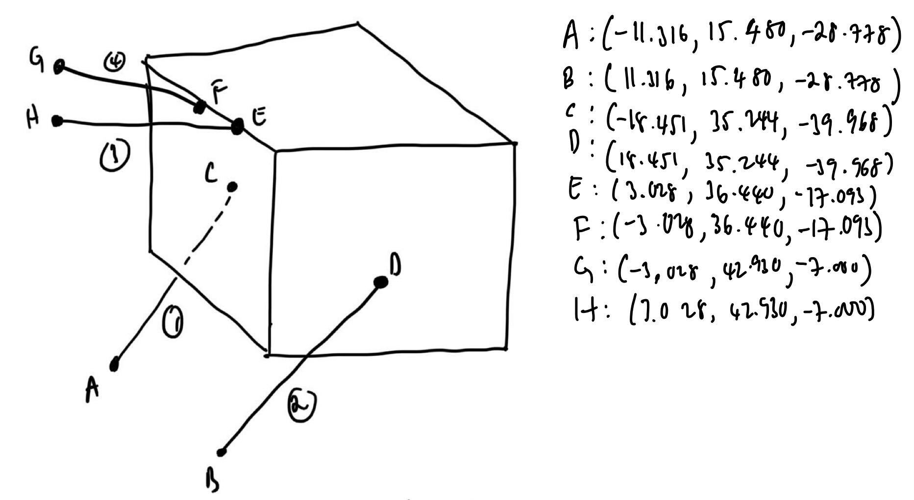

Professional Experience
Engineering industry internships, Formula SAE aerodynamics leadership roles, and hands-on manufacturing development.
Quick Jump to Experience
Industry Internships
Formula SAE Leadership
Academic & Lab
Mechanical Testing Engineering Intern
June 2025 – September 2025 | Eden Prairie, MNCompany: ITW MTS Systems Corporation
- Conducted comprehensive evaluations of high-temperature extensometer models to analyze performance, installation procedures, and design distinctions.
- Redesigned and developed an engineering prototype for a contact force measurement device to enable per-rod force resolution using SolidWorks CAD.
- Modified mechanical and electrical designs, selecting new load cells and re-engineering wiring for direct integration with an MTS controller.
- Validated prototypes through rigorous bench testing and data acquisition (DAQ) to ensure reliability and precision.
Contact Force Prototype SolidWorks CAD & Test Bench Setup
Project Media Target: Replace with photo of contact force prototype rig or DAQ test output graph.
Aerodynamics Lead
June 2024 – June 2025 | Evanston, ILOrganization: Northwestern Formula Racing SAE
- Led an 8-member engineering team to design, manufacture, and validate a full body aerodynamics package for the Formula Student car.
- Executed 100+ hours of 3D Ansys Fluent CFD simulations across pitch, roll, and yaw angles to construct a comprehensive aero map.
- Researched advanced carbon fiber curing processes and mold materials, cutting manufacturing lead time by 25%.
- Negotiated financial and in-kind corporate sponsorships, securing $15,000 in funding for team manufacturing operations.
- Managed project timelines and manufacturing workflows using ClickUp project management software.

3D Ansys Fluent CFD: Full-car velocity streamlines & downforce flow attachment

Track Testing: Dynamic track validation & cornering aero balance

Composite Manufacturing: Vacuum bagging prepreg carbon layup
Engineering Intern
June 2023 – September 2024 | Glenview, ILCompany: Asahi Kasei Bioprocess America
- Analyzed column assembly drawings and standard parts in SolidWorks PDM to resolve part file inconsistencies and update manufacturing drawings.
- Re-engineered the hydraulic cylinder priming process on ergonomic column frames, reducing assembly time from 2 hours to 45 minutes (62.5% time savings).
- Tested cylinder priming methods using bypass Swagelok ball valves, elbow unions, and high-pressure hoses.
- Developed Piping & Instrumentation Diagrams (P&IDs), Electrical Drawings, Bills of Materials (BOMs), and assisted with Factory Acceptance Testing (FAT).
Hydraulic Column Frame Assembly & P&ID Schematic
Bioprocess equipment CAD assembly & hydraulic cylinder priming system schematics.
Rear Wing Design & Airspeed Sensors Engineer
September 2022 – June 2026 | Evanston, ILOrganization: Northwestern Formula Racing SAE
- Redesigned rear wing elements according to 2024 FSAE regulations, reducing drag by over 10% for improved endurance performance.
- Conducted CFD simulations in Siemens Star CCM+ with full mesh quality validation (Cell Quality, Skewness, Chevron Quality).
- Designed custom differential mounts using SolidWorks Topology Optimization to increase stiffness-to-weight ratio by 10%.
- Developed airspeed sensor PCB in Altium Designer to validate physical airflow velocity against CFD models.

SolidWorks 3D CAD: 4-Element rear wing assembly with swan-neck mounts

Siemens Star CCM+: 3D CFD velocity streamlines & pressure distribution

Composite Tooling: 3-Axis CNC milling of MDF male wing molds
Manufacturing & Mechanical Engineering Coursework
September 2022 – Present | Evanston, ILInstitution: Northwestern University
- Gained extensive hands-on experience in 3-axis CNC milling (Haas VF-2 & Mini Mill 2) using Siemens NX CAM G-code programming.
- Completed projects in plastic injection molding tooling design, casting, FDM/SLA 3D printing, and GD&T drafting.
- Studied Theory of Machines gear design, Finite Element Analysis in ANSYS, and embedded Mechatronics C++/Python control systems.